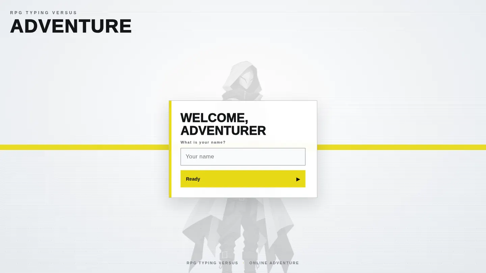

v82 — Adventure Card QR Login
A preview of the two QR scanning paths using simulated student data. No Firebase writes or player registrations occur here.

The QR provides the card code. The player chooses a username once, then enters the start screen.
Actual QR cards should point to adventure.html?card=YOURCARD. The live game requires Firebase connectivity; this page is only an image preview.